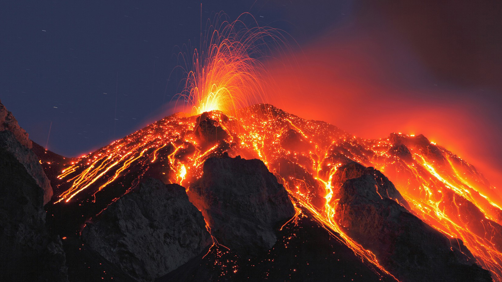

A volcanoes is an opening on the surface of a planet or moon that allows material warmer than its surroundings to escape from its interior. When this material escapes, it causes an eruption.An eruption can be explosive, sending material high into the sky. Or it can be calmer, with gentle flows of material.
A supervolcano is a volcano that has experienced one or more eruptions that produced over 1,000 cubic kilometers (240 cu mi) of volcanic deposits in a single explosive event. Such eruptions occur when a very large magma chamber full of gas-rich, silicic magma is emptied in a catastrophic caldera-forming eruption. Ash flow tuffs emplaced by such eruptions are the only volcanic product with volumes rivaling those of flood basalts.
Submarine volcanoes are common features of the ocean floor. Volcanic activity during the Holocene Epoch has been documented at only 119 submarine volcanoes. but there may be more than one million geologically young submarine volcanoes on the ocean floor. In shallow water, active volcanoes disclose their presence by blasting steam and rocky debris high above the ocean's surface. In the deep ocean basins, the tremendous weight of the water prevents the explosive release of steam and gases; however, submarine eruptions can be detected by hydrophones and by the discoloration of water because of volcanic gases.